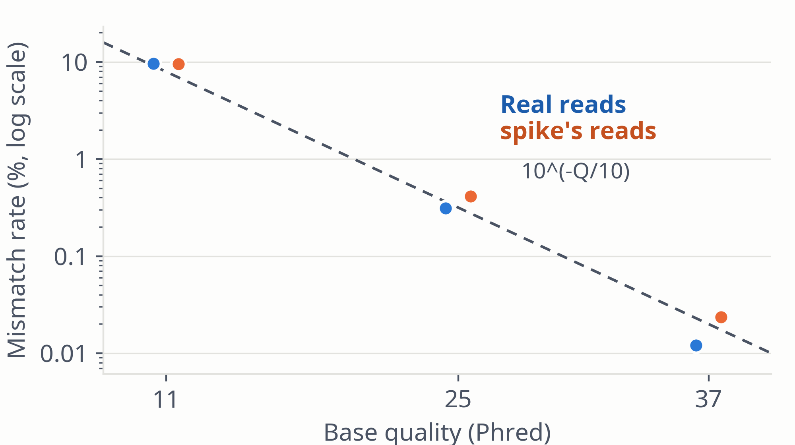

A base is wrong at the rate the sampled reads show for its quality, read class, lows among its last 16 qualities, distance from the 3′ end, template run and the read's recent errors. Sparse cells back off to coarser ones and, with nothing counted, to p = 10^(−Q/10). A wrong base becomes one of the three others with equal probability; indel errors are off by default.
| Quality | Real reads | spike | 10^(−Q/10) |
|---|---|---|---|
| Q11 | 9.63% | 9.54% | 7.94% |
| Q25 | 0.310% | 0.414% | 0.316% |
| Q37 | 0.012% | 0.023% | 0.020% |
Mismatch rate on aligned bases, MAPQ ≥ 20; 261 positions where ≥ 10% of reads mismatch (variants) excluded. At Q11 spike matches the real rate, which the nominal rate understates; at Q25 and Q37 it errs 1.3× and 1.9× the real rate.

Figure 6. Mismatch rate by base quality with Wilson 95% CIs (some narrower than the dots); dashed: 10^(−Q/10). Soft-clipped bases are not counted, so the error rate of the poorest bases is underestimated in both groups.
spike · Methods · 11 / 25